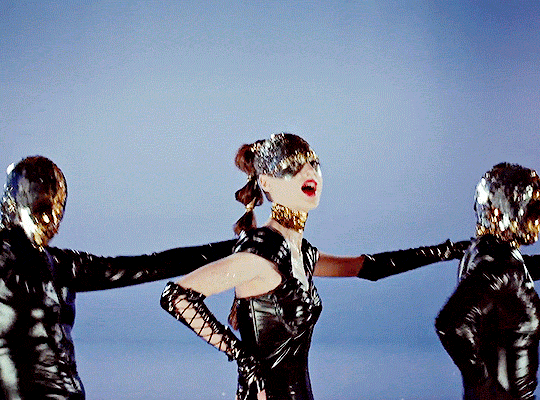

O COMEÇO
Celeste sobrevive a um acontecimento violento em sua escola e sua vida toma um novo rumo.
O FILME
A ASCENSÃO.
A QUEDA.
O ESPETÁCULO.
Escrito e dirigido por Brady Corbet, Vox Lux acompanha Celeste, uma jovem sobrevivente que transforma uma experiência traumática em uma extraordinária carreira como estrela da música pop.
A história começa em 1999 e retorna a 2017, observando a relação entre celebridade, violência, espetáculo e a construção de uma imagem pública.

CELESTE
Em 1999, aos treze anos, Celeste sobrevive a um tiroteio em sua escola. Depois do acontecimento, ela canta em uma cerimônia de homenagem às vítimas.
Ao lado de sua irmã Eleanor, Celeste começa a construir uma carreira musical. O trauma se transforma em música, a música em imagem e a imagem em espetáculo.
Dezoito anos depois, Celeste é uma estrela internacional. Agora adulta, prepara-se para um grande concerto diante de milhares de pessoas, enquanto enfrenta o peso de sua própria imagem pública.
TRILHA SONORA ORIGINAL
A música de Vox Lux reúne canções escritas para o universo de Celeste por Sia, além da trilha instrumental composta por Scott Walker.
GALERIA

USE ← / → OU AS SETAS PARA EXPLORAR
TRAILER
ARQUIVO
Celeste sobrevive a um acontecimento violento em sua escola e sua vida toma um novo rumo.
A música transforma a experiência pessoal de Celeste em uma identidade pública e em uma carreira.
Celeste se prepara para uma grande apresentação, cercada por músicos, dançarinos, câmeras e espectadores.
O filme de Brady Corbet chega aos cinemas como um retrato da fama, da performance e da cultura contemporânea.